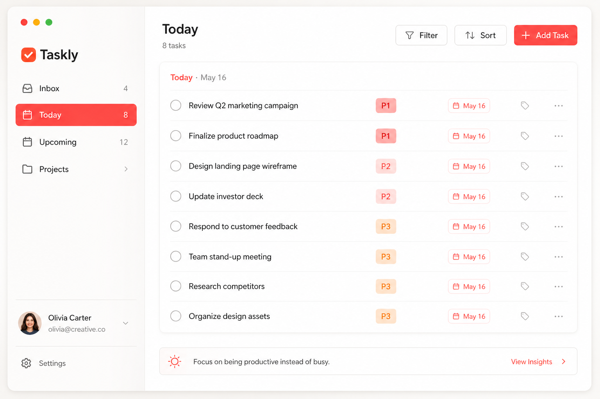
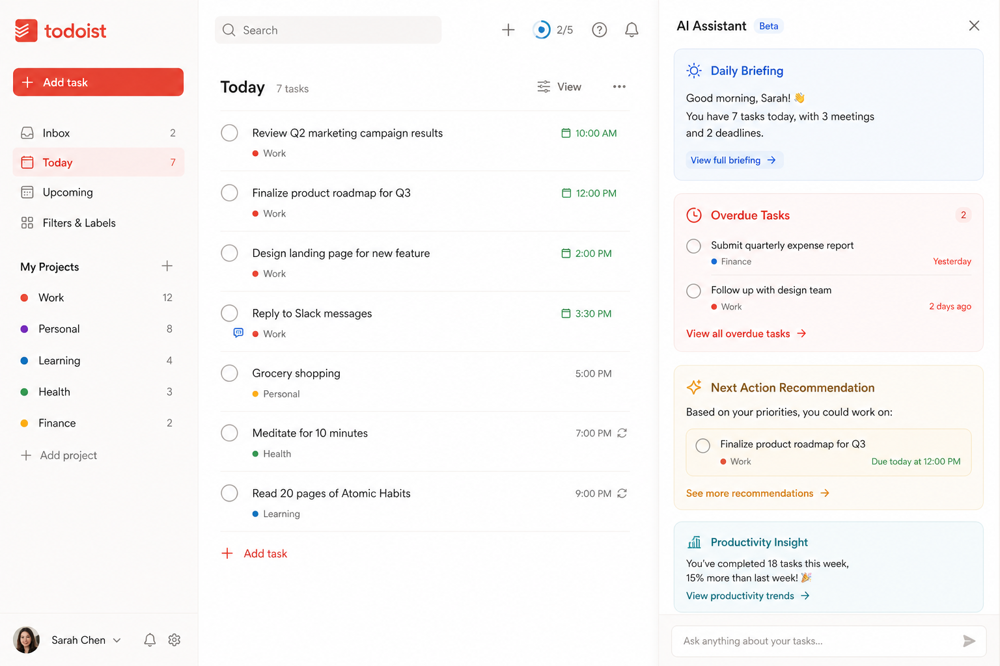
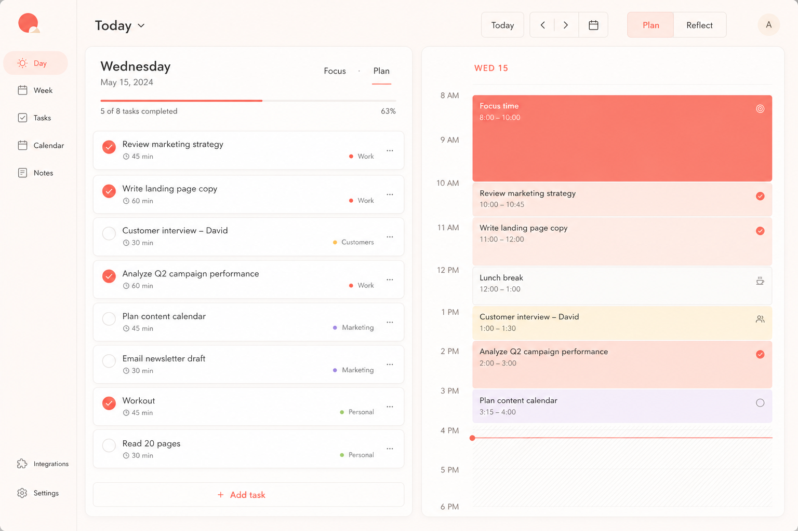
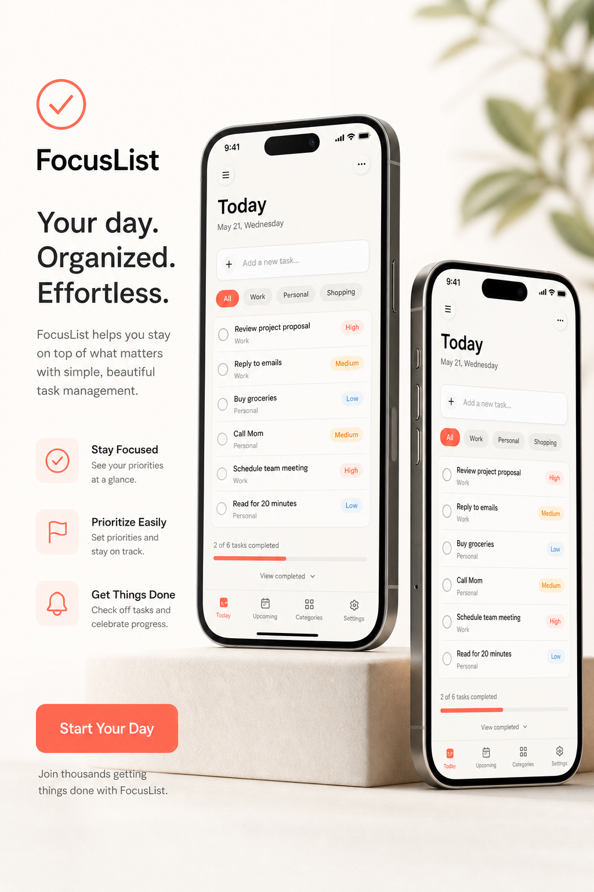
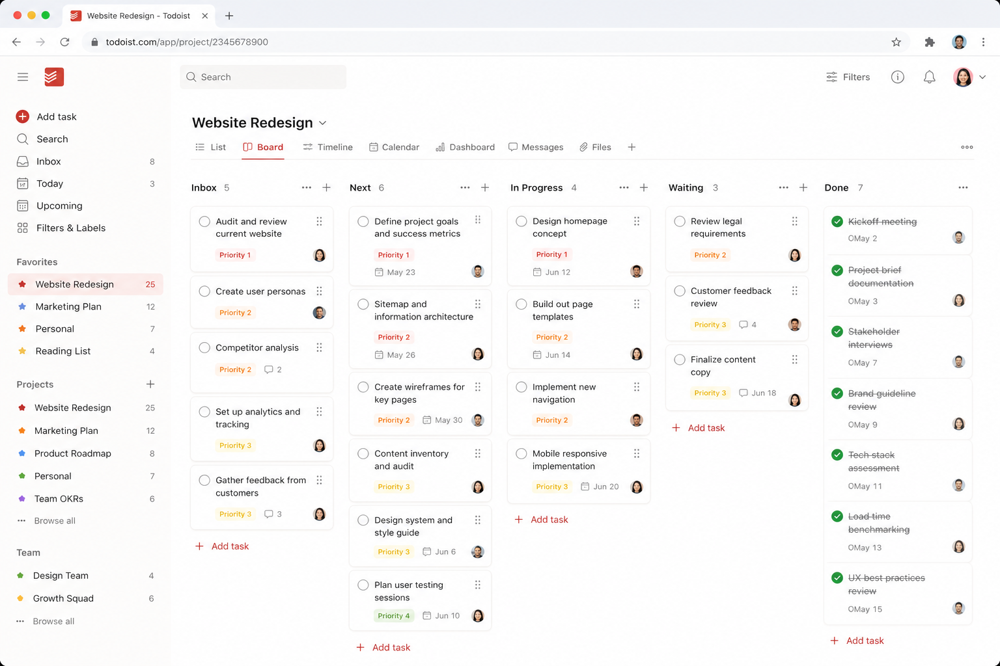
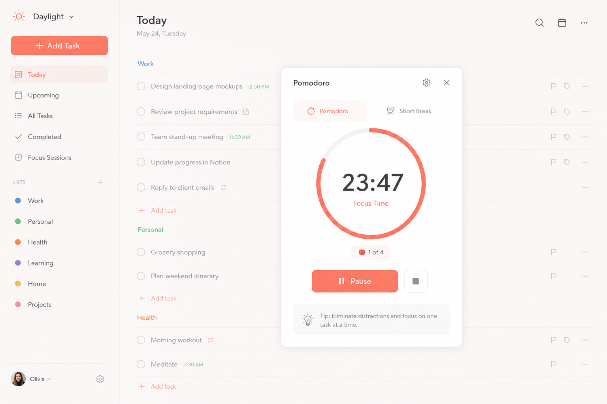

为什么之前那版不对？
你指出的问题是对的：之前太像泛 AI SaaS，不像 ToDoList。
❌ 旧图问题
暗黑、紫蓝、抽象科技感过强，缺少真实任务列表、checkbox、Today 视图、日期、优先级这些 ToDoList 必备视觉元素。
✅ 新图方向
参考 Todoist/Sunsama：暖白背景、红色行动色、真实产品截图、桌面+手机、任务清单、日程列、AI 侧边栏。
V2 宣传图展示
更适合给股东、用户、产品落地页使用。
产品主视觉
桌面任务列表 + 手机端叠图，突出真实 ToDoList 场景。

Today 今日视图
圆形 checkbox、优先级、日期、侧边栏，直接表达任务管理。

AI 助手侧边栏
AI 建议不再是泛聊天，而是围绕任务、过期、下一步。

日程 + 任务规划
Sunsama 风格的日计划：任务列表和日历排程结合。

移动端待办
手机端展示，适合宣传“随时记录任务”。

看板视图
仍然保留看板能力，但采用暖白 ToDo 风格。

番茄钟
番茄钟嵌入任务列表，而不是孤立科技 UI。
下一步建议：以后所有宣传页优先使用 V2 图片；旧版 dark SaaS 图片可以保留给“技术架构/后台能力”页面，但不要作为主宣传图。